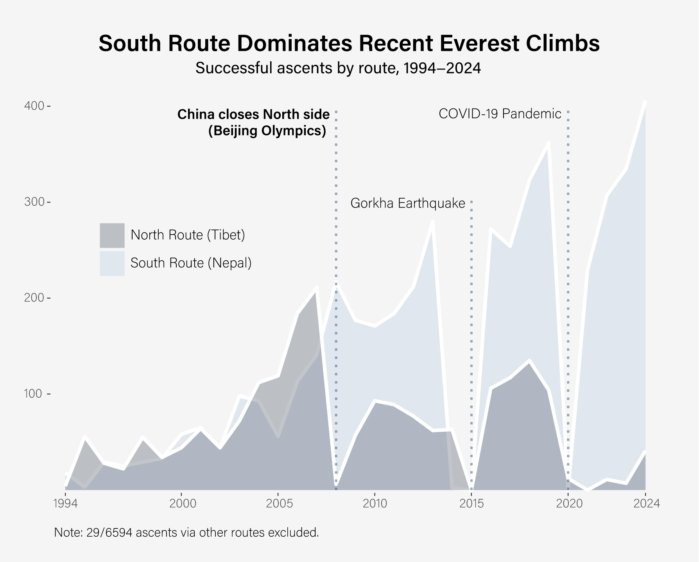

Mount Everest is the world’s tallest mountain, standing at 29,029 feet. The 2025 climbing season is just about to open. According to the Himalayan Database, at the end of last year, 7120 people had reached the summit. When repeat climbs are counted, the number of successful ascents exceeds 12,000.
During the first half of the 20th century many unsuccessful attempts to climb Everest were mounted. Famously, in 1924, George Mallory and Sandy Irvine disappeared during the third British expedition to the mountain - the first two of which had failed. There remains great controversy over whether Mallory and Irvine, in fact, had reached the summit before their disappearance. 10 more attempts were made in total by various expeditions before, on May 29, 1953, New Zealand explorer Sir Edmund Hillary and Sherpa mountaineer Tenzing Norgay became the first climbers to reach the peak of Everest.
Since these first expeditions, more than 300 people have died in the attempt to climb Everest. While the danger remains ever present, the number of attempts just keeps climbing. The allure of the world’s tallest mountain seems to remain the same. As both Mallory and Hillary have been purported to have said after being asked why climb Everest: “Because it’s there.” I wanted to find out what is changing on Everest while the mountain stands still.
One notable change in Everest climbing has been the switch between the North and South side for the preferred route to take up the mountain. The two major routes on Everest have been the North Col route, which is through Tibet, and the South Col route, through Nepal. Though there are more than a dozen ways to get up the mountain, these two paths are the only ones that are guided, having much more infrastructure and climbing support since commercial climbing took over in the 1990s. For many years the North Col route was the most popular path of ascent. However, the South Col route has recently taken over in popularity, in what I have dubbed the “South Col Switch.”
As Alan Arnette, seasoned Everest blogger, said to National Geographic in 2014, “The north side is less popular because of the random and fickle nature of the Chinese government." In addition, China’s rules require a climbing group to have members who are all of the same nationality, older than 18 and no older than 60, and to hire a team of local Tibetans as porters.
The popularity of the North Side route seems to never have fully recovered after 2008, when China closed the North Side in preparation for the Beijing Olympics, in which the Olympic Torch was taken to the summit as part of the Olympic relay tradition. During that time, Nepal reportedly denied a request from China to close their side of the mountain as well.

All of the people killed in both of these Avalanches were Sherpas, highlighting the labor and tragic sacrifices that keeps the industry of Everest alive. Sherpa is an ethnic group and language native to the mountainous areas surrounding Everest, around Tibet, India, and Nepal. The word is also used to describe the “trekking guides, mountain climbers, porters," though not every Sherpa is an ethnic sherpa. Those working on the Khumbu Icefall when they were tragically killed were mostly ethnic sherpas.
While not all Nepalese climbers are sherpas and not all sherpas are Nepalese, ethnic sherpas make up a large percentage of the expert guides who have summited as part of the labor to support other climbers - often setting up ropes and ladders for other climbers to use. Lecturer at Penn State, Pasang Yangjee Sherpa, said in a comment to Newsweek on the exploitation of Sherpa labor: "The first thing that should happen is that people who are involved in this industry should acknowledge the hard work the expedition workers do on the mountain. I think that's where we can start."
David Morton, mountaineering guide, also commented to Newsweek that Everest is “a pretty professionalized industry with a lot of money involved.” This increasing commercialization is likely part of a positive feedback loop with the increasing number of climbers, and no doubt, as Morton comments, part of the increasing burden placed on Sherpa labor.
Because of complications related to permits, insurance, and Sherpa guiding, most climbers join a commercial team. The average cost for a spot is nearly $45,000 USD. Climbing as part of a commercial expedition is the reality for most climbers, and while it often helps with safety, it leads to intense traffic, intensifying the commercialization and standardization of summiting. Furthering the increasing traffic is the fact that almost all summit attempts are made during the month of May. Aside from May, in which around 87% of first-ascents have occured, the most common month is October, at 192 climbs. However, only 6 of these October climbs have occurred in the last 20 years.
A new bill proposed in Nepal in April 2025 shows that regulations are growing increasingly intense. According to the Kathmandu Post, the Integrated Tourism Bill says that anyone who wants a permit to climb Everest must prove they have submitted at least one 7000m+ peak beforehand. Additionally, the bill requires a health check approved by the Nepali government, and bans any alternative-route climbing without prior approval by the Department of Tourism. While controversial, the changes may be what Nepal sees as necessary in the face of a mountain that never stops calling out to climbers.
Tourism to Everest, by climbers and non-climbers, is a huge part of Nepal’s economy. However, it comes at the cost of pollution, in the form of garbage and discarded items left behind by climbers and other visitors. Tragically, what is left behind often includes human remains as, many times the bodies of climbers that have perished on the route are not able to be brought down from the mountain. As a record number of climbers clock in each year, we can only expect this problem to get worse.
Summiting Everest is an incredible feat, but one that is not achieved without affecting the Himalayas’ environment and people. The “top of the world” will continue to draw hundreds of climbers each year. In order to continue to permit this challenge, in all of its glory, we must be committed to preserving Everest and all of the people who keep it standing tall.
this section is unfinished
Here’s a link.